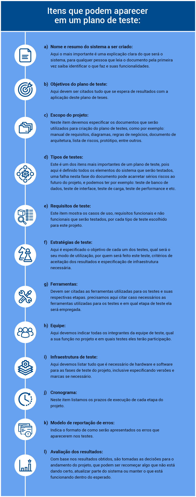
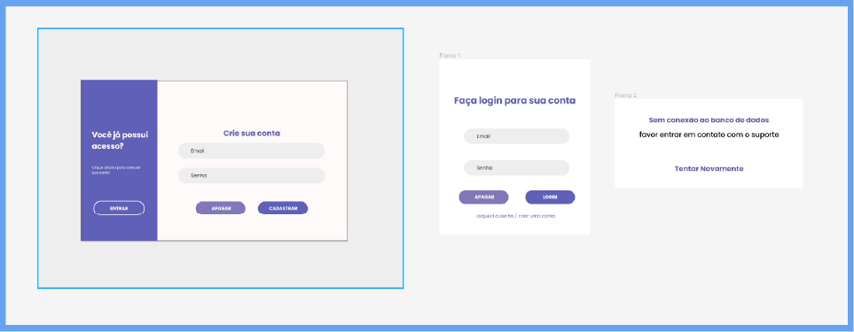

Como sugestão, configure a opção de leitura de caracteres e de pontuação de seu leitor de tela para o grau máximo de leitura, a fim de que os códigos disponibilizados neste material sejam lidos corretamente. No caso do NVDA (NonVisual Desktop Access), para localizar a opção Grau de pontuação/símbolos, acesse Preferências – Configurações – Fala. Altere o padrão Pouco para Tudo. Dessa forma, o leitor passará a ler os segmentos de código em sua totalidade.
Uma etapa essencial em todas as fases de criação de um software é o planejamento, ou seja, especificar como ocorrerão todas essas fases, desde equipe, tempo de duração do projeto, cronograma de cada etapa, quais diagramas serão executados, que dados serão armazenados no banco, como será a interface etc. Certamente, todo programador e toda equipe de desenvolvimento esperam ansiosamente ver o projeto funcionando, porém, para que o sistema seja bem-sucedido, a etapa do planejamento não pode ser burlada.
O teste de um sistema não pode ser feito de qualquer maneira, apenas colocando dados depois do software pronto e vendo se ele “roda”. Existem diversos critérios e muitas particularidades que precisam ser levados em consideração, e é neste momento que entra um plano de teste, que é um documento que visa planejar as atividades de teste durante todo o projeto e os métodos de testagem que serão empregados. Ainda, deve estabelecer as métricas do que é considerado aceitável ou não como resultado de um teste, as respostas da equipe perante erros que possam aparecer, além de diversos outros elementos que serão ainda apresentados.
O plano de testes durará durante toda a vida útil do projeto de software que está sendo criado. Normalmente é elaborado por um gerente de testes, ou pelas pessoas mais experientes da equipe, com a ajuda dos demais envolvidos no desenvolvimento, podendo ter a participação de pessoas de outras áreas que tenham relevância para o documento, por exemplo, designers.
Os planos de testes nem sempre têm os mesmos itens para todas as empresas, podendo ser adequados conforme as necessidades, o foco e o público-alvo, porém devem deixar bem claro “o quê”, “como” e “quando” serão feitos os testes e o motivo pelo qual a sua existência e as etapas que o compõem são importantes.
Como indicado anteriormente, os planos de teste diferem conforme o projeto, mas é de extrema importância conhecer os principais itens que devem existir nesse documento. Com base nesse modelo que será apresentado, é possível incluir ou excluir elementos para adequar aos seus futuros projetos.
Itens que podem aparecer em um plano de teste:
a) Nome e resumo do sistema a ser criado
Aqui, o mais importante é uma explicação clara do que será o sistema, para que qualquer pessoa que leia o documento pela primeira vez saiba identificar o que ele faz e quais são as suas funcionalidades.
b) Objetivos do plano de teste
Aqui, deve ser citado tudo o que se espera de resultados com a aplicação desse plano de tese.
c) Escopo do projeto
Neste item, deve-se especificar os documentos que serão utilizados para a criação do plano de teste, por exemplo: manual de requisitos, diagramas, regras de negócios, documento de arquitetura, lista de riscos, protótipo, entre outros.
d) Tipos de teste
Este é um dos itens mais importantes de um plano de teste, pois aqui são definidos todos os elementos do sistema que serão testados. Uma falha nesta fase do documento pode acarretar sérios riscos ao futuro do projeto. Por exemplo: teste de banco de dados, teste de interface, teste de carga, teste de performance etc.
e) Requisitos de teste
Este item mostra os casos de uso e os requisitos funcionais e não funcionais que serão testados por cada tipo de teste escolhido para esse projeto.
f) Estratégias de teste
Aqui, é especificado o objetivo de cada um dos testes, qual será o seu modo de utilização, por quem será feito o teste, os critérios de aceitação dos resultados e a especificação de infraestrutura necessária.
g) Ferramentas
Aqui, devem ser citadas as ferramentas utilizadas para os testes e suas respectivas etapas. É preciso citar, caso necessário, as ferramentas utilizadas para os testes e em qual etapa de teste ela será empregada.
h) Equipe
Aqui, devem ser indicados todos os integrantes da equipe de teste, especificando a função de cada um no projeto e em quais testes terão participação.
i) Infraestrutura de teste
Aqui, deve-se listar tudo que é necessário de hardware e software para as fases de teste do projeto, inclusive especificando versões e marcas, se necessário.
j) Cronograma
Neste item, listam-se os prazos de execução de cada etapa do projeto.
k) Modelo de reportação de erros
Neste item, deve-se indicar a forma como serão apresentados os erros que aparecerem nos testes.
l) Avaliação dos resultados
Com base nos resultados obtidos, são tomadas as decisões para o andamento do projeto, que podem ser: recomeçar algo que não está dando certo, atualizar parte do sistema ou manter o que está funcionando dentro do esperado.
Para começar o exemplo de um plano de teste, simule um sistema simples de cadastro de usuários e login, em que serão criadas algumas regras a serem seguidas durante o processo de cadastro de novos usuários e haverá todos os testes necessários para analisar o funcionamento do sistema.

Figura 1 – Tela do sistema
Fonte: adaptado de Figma (2023)
A Imagem apresenta duas telas do sistema de cadastro/login. A primeira tela é dividida em dois retângulos na vertical. O da esquerda, em um tom de roxo, pergunta se o usuário já tem acesso. Caso positivo, tem o botão para entrar e que leva à tela de login. O retângulo à direita, em branco, tem a parte de criação de conta, onde, em dois campos de texto, o usuário pode cadastrar seu e-mail e sua senha. Abaixo, os botões para apagar e cadastrar. A segunda tela é a tela de login, que tem dois campos de texto, os mesmos do cadastro, e-mail e senha, e abaixo há os botões de apagar e login.
1. Nome e resumos do sistema
O sistema é chamado “Login +” e pode ser utilizado como um script de login acoplado a outros sistemas. Ele tem duas telas em que o usuário pode cadastrar seu login e uma tela para o login ser executado. Esse script serve para aumentar a segurança de um sistema que não apresente essa funcionalidade.
2. Objetivos do plano de teste
Esse documento do plano de testes do sistema Login + é composto dos seguintes objetivos:
3. Escopo do projeto
O plano de teste engloba os setores de banco de dados, telas de cadastro e login, segurança/criptografia da senha, análise do protótipo e interface do projeto.
A interface será testada apenas para sistemas desktop e inclui as telas de login e cadastro, além das mensagens de erro.
Todos os testes são finalizados quando cada uma das etapas estiver funcionando.
É preciso descrever os tipos de testes que farão parte do plano e qual será o seu objetivo nesse plano.
1. Tipos de testes
Todos os testes têm um objetivo, portanto a escolha deve ser bem elaborada, pois eles que cobrirão as diversas possibilidades de erros que podem ocorrer em um sistema. A seguir, veja o que se teria no plano de testes:
Os testes utilizados no projeto serão: teste estrutural, teste de banco de dados, teste funcional, teste de interface do usuário, teste de carga e teste de segurança.
2. Requisitos de teste
Nesta etapa, é preciso descrever o que será testado em cada um dos testes utilizados no sistema de cadastro e login.
2.1. Teste de banco de dados
2.2. Teste funcional
Teste funcional é o conhecido como caixa-preta, em que não se tem acesso ao código-fonte, mas são testadas as diversas funções do sistema, com o máximo possível de variações de dados inseridos, para testar, por exemplo, as características a seguir:
Aqui, é possível citar duas ferramentas principais de testes funcionais: Selenium e JUnit.
2.3. Teste de interface do usuário
2.4. Teste de carga
2.5. Teste de segurança
Como optou-se por um exemplo simples para facilitar o entendimento, serão feitos apenas esses testes, mas seria possível ter, por exemplo, teste automatizado, teste de desempenho, teste de volume etc.
3. Estratégias de teste
Agora, saiba mais sobre as estratégias de teste.
3.1. Teste de banco de dados
| Objetivo do teste | Garantir que os dados cadastrados estejam sendo salvos corretamente no banco de dados e que o sistema de login consiga acessar a base de dados para autorizar o usuário. |
| Técnica |
Invocar cada método de cadastro ao banco de dados com valores válidos e inválidos. Testar o processo de consulta à base de dados por meio do login. |
| Critério de finalização | Todos os acessos à base de dados funcionam como projetados e sem perda de informações. |
| Considerações especiais | Processos devem ser invocados manualmente. |
Tabela 1 – Teste de banco de dados
Fonte: Senac EAD (2023)
3.2. Teste funcional
| Objetivo do teste | Garantir que as principais funções do programa estejam funcionando. |
| Técnica |
Executar todos os casos de uso, usando dados válidos e inválidos, para verificar se:
|
| Critério de finalização |
Todos os testes foram aplicados com êxito. Todos os erros identificados foram corrigidos ou reportados. |
| Considerações especiais | Aqui, pode ser reportado algo que ajude na avaliação final dos testes funcionais. |
Tabela 2 – Teste funcional
Fonte: Senac EAD (2023)
3.3. Teste de interface do usuário
| Objetivo do teste | Garantir que a interface apresente o mesmo formato projetado no protótipo e respeite as regras de usabilidade definidas pela equipe de desenvolvimento e seus gerentes. |
| Técnica |
Testar todos os elementos de cada janela da interface, especialmente botões, textos e mensagens de erros. Modificar o tamanho das janelas para ver se funcionam nos dispositivos para os quais foram projetadas. |
| Critério de finalização |
As janelas funcionam sem erros em todos os dispositivos para os quais foram projetadas. Botões e mensagens de erro, ou avisos, abrem corretamente sempre que for necessário. A interface respeita as regras de usabilidade do projeto do sistema. |
| Considerações especiais | Nenhuma |
Tabela 3 – Teste de interface do usuário
Fonte: Senac EAD (2023)
3.4. Teste de carga
| Objetivo do teste | Testar o tempo de resposta do sistema, alterando o número de usuários acessando ao mesmo tempo. |
| Técnica | Testar o tempo de resposta do sistema, alterando o número de usuários acessando ao mesmo tempo. |
| Critério de finalização | O sistema não apresentar falhas nem perda de acesso com até 500 usuários ao mesmo tempo. |
| Considerações especiais | Deve-se ter toda a base de dados em uma mesma máquina recebendo todos os acessos para que o teste tenha validade. |
Tabela 4 – Teste de carga
Fonte: Senac EAD (2023)
3.5. Teste de segurança
| Objetivo do teste |
Verificar se somente usuários cadastrados têm acesso ao sistema. Verificar se as senhas estão criptografadas na base de dados. |
| Técnica | Testar dados válidos e inválidos para tentar acessar o sistema e testar se os dados de cadastro estão criptografados na base de dados. |
| Critério de finalização | O teste é finalizado quando todos os acessos válidos funcionam e não é encontrado nenhum acesso inválido no processo. |
| Considerações especiais | Nenhuma |
Tabela 5 – Teste de segurança
Fonte: Senac EAD (2023)
Agora, veja o desafio a seguir.
Agora é hora de um pequeno desafio!
Desafio 1: Imagine um sistema que recebe o nome do aluno e duas notas desse aluno, calcula a sua média e, ao fim, grava, em uma base de dados, o nome, a média e se o aluno foi aprovado com base em uma média maior ou igual a 7.
Defina que tipos de testes você usaria nesse sistema e qual estratégia de teste seria utilizada.
4. Equipe
Veja a tabela a seguir.
| Cargo | Responsabilidades |
|---|---|
| Gerente |
|
| Test designer |
|
| Designer gráfico/visual |
|
| Testador |
|
| Gerente de banco de dados |
|
| Implementador |
|
Tabela 6 – Equipe
Fonte: Senac EAD (2023)
5. Infraestrutura de teste
Aqui, são colocados todos os hardwares e softwares necessários para o bom andamento da fase de testes.
| Recursos de infraestrutura |
|---|
| Servidor de banco de dados MySQL |
| NetBeans 13 |
|
Terminais de teste Três PCs (computadores pessoais) – não é necessária conexão à Internet |
Tabela 7 – Recursos de infraestrutura
Fonte: Senac (2023)
6. Cronograma
Aqui, será simulado um cronograma de atividades de teste. É sempre importante ter um último item de avaliação dos testes, pois decisões são tomadas com base nos resultados, devendo, inclusive, ser criado um novo cronograma de testes sempre que houver atualizações.
| Etapas | Data de início | Data de término |
|---|---|---|
| Planejar teste | 20/05/2023 | 22/05/2023 |
| Teste estrutural | 22/05/2023 | 22/05/2023 |
| Teste de banco de dados | 23/05/2023 | 23/05/2023 |
| Teste funcional | 24/05/2023 | 24/05/2023 |
| Teste de interface | 25/05/2023 | 25/05/2023 |
| Teste de carga | 26/05/2023 | 26/05/2023 |
| Teste de segurança | 27/05/2023 | 27/05/2023 |
| Avaliar teste | 28/05/2023 | 30/05/2023 |
Tabela 8 – Cronograma
Fonte: Senac EAD (2023)
Esta parte do plano de teste é de extrema importância, pois especifica a forma como os erros serão reportados e qual será a avaliação dos resultados e das medidas futuras a serem tomadas.
7. Modelo de reportação de erros
Na parte de reportação de erros, utiliza-se um programa do tipo bugtracker (específico para reportar os erros).
Um dos modelos mais aceitos para a descrição de erros é o que utiliza três itens para citar cada erro existente. Veja a seguir.
É onde se coloca alguma abreviação, caso haja, com o nome do erro. Por exemplo:
- [BUG] Erro de cadastro no campo E-mail.
É onde vai a mensagem apresentada pelo programa, ou a descrição do erro feita pelo testador, caso o sistema não apresente um erro aparente, mas a pessoa responsável pelo teste entenda que algo deveria ter acontecido diferente do que aconteceu.
- O cadastro não apresentou erro ao ser inserido um e-mail sem “@”.
É qualquer informação adicional que possa ajudar o gerente de teste nas tomadas de decisões posteriores, como uma possível solução ao erro, uma sugestão de usabilidade ou até o que imagina ser a origem do erro.
- Precisa ser usada uma validação de formulários. Sugere-se o uso de expressões regulares para a solução do problema.
Permite definir níveis de importância para os erros, que podem ser, por exemplo, baixa, média e alta.
- Prioridade alta
8. Avaliação dos resultados do teste
Nesta etapa, analisam-se os resultados obtidos após todas as fases de testes, normalmente criados pelo testador, que, evidentemente, pode ser de mais de uma área (programador, design, usuários do público-alvo do projeto). Com base nas respostas registradas pelos testadores, decide-se o que deve ser feito.
A seguir, veja outro desafio.
Que tal um pequeno desafio?
Desafio 2: Com base no desafio 1, simule possíveis erros que podem aparecer e use o método de reportação aprendido para descrever esses erros. Ao final, crie uma avaliação dos resultados, com possíveis medidas a serem tomadas com base nos erros apresentados.
Após todas as etapas do plano de teste finalizadas, fica evidente a importância de um documento de testes muito bem elaborado, que abranja o máximo das possibilidades que podem aparecer durante um processo de criação de um sistema e, depois, durante toda a vida útil dele. Esse documento planeja um caminho que deve ser seguido pela equipe de testes e evita o retrabalho de ir descobrindo o que deve ser testado conforme os erros forem aparecendo.
Sendo assim, essa etapa não pode ser ignorada, pois qualquer erro futuro que não foi projetado pode colocar em risco todo o andamento do processo e o prazo de conclusão do seu software. Dessa forma, entende-se que um documento bem formatado agiliza o trabalho da equipe e deixa mais rápido o processo de criação do sistema. Além disso, esse documento deixa o sistema com uma base muito mais sólida para enfrentar os desafios de mercado, pois os principais erros que poderiam ocorrer já foram tratados.